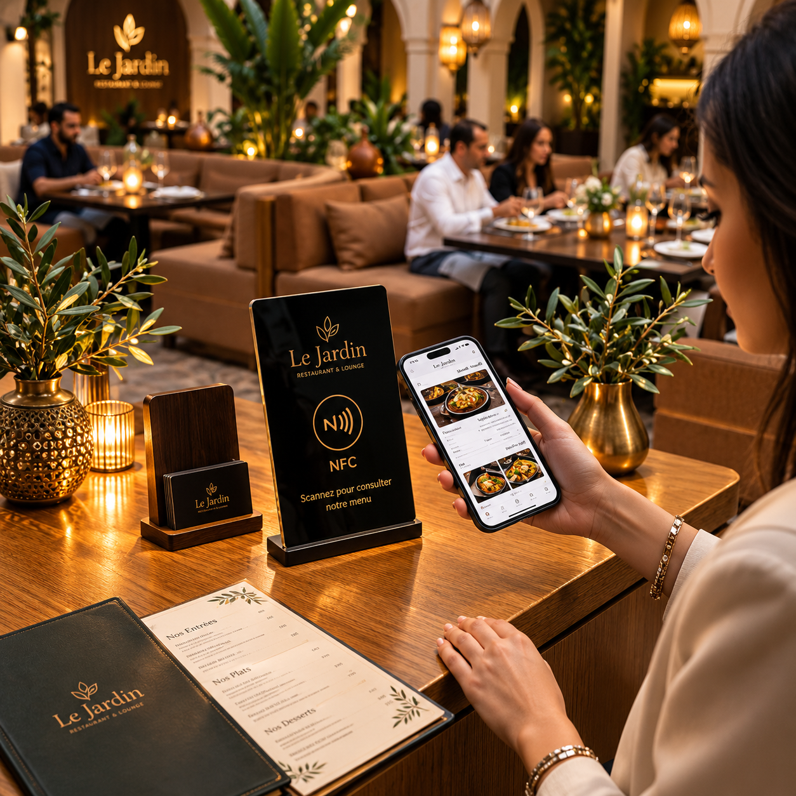
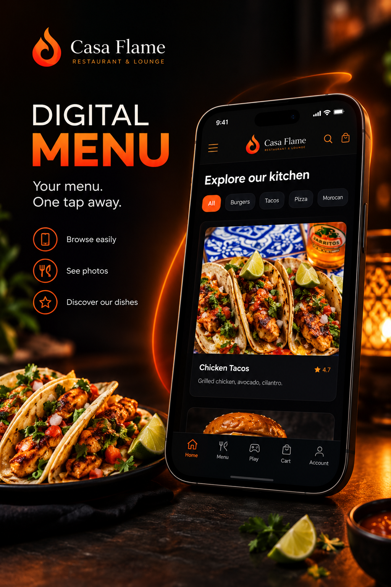
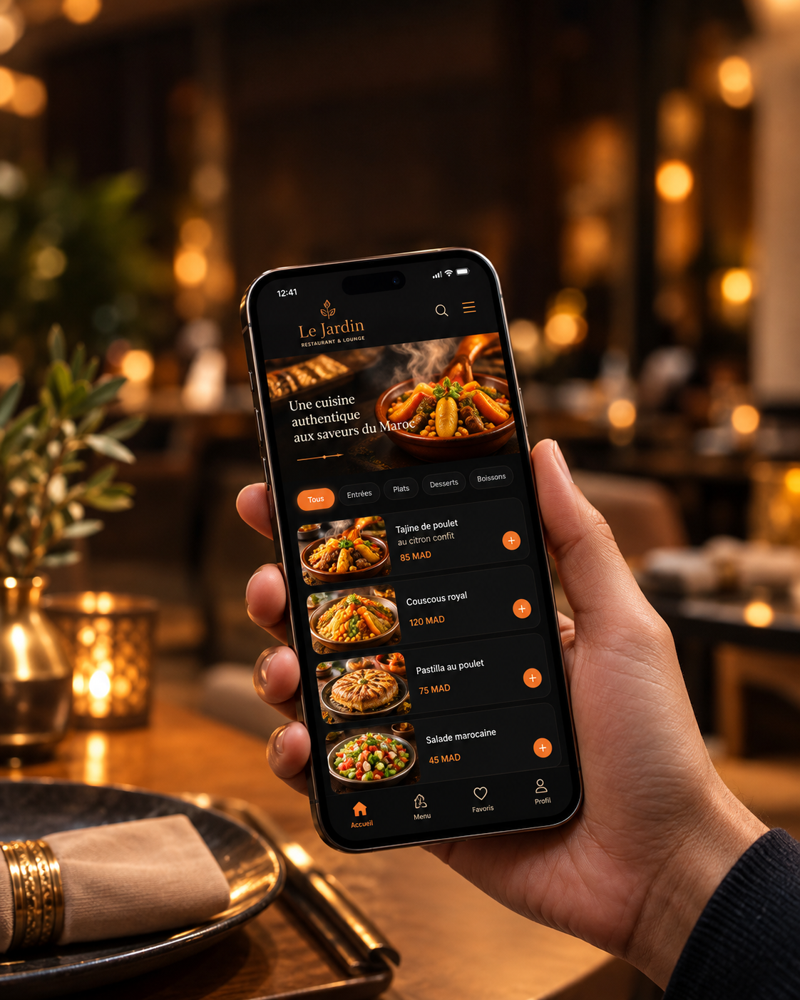

حلول NFC المتاحة
اختر الوجهة الرقمية التي تناسب طريقة تواصل زبائنك مع نشاطك.
- بطاقة تقييمات جوجلتفتح رابط التقييم مباشرة، ليسهل على الزبون الوصول إلى صفحة تقييم نشاطك.
- بطاقة تعريف رقميةصفحة واحدة تجمع واتساب وحساباتك الاجتماعية وموقعك ومعلومات نشاطك.
- ملصق NFC أو ستاند QRضعه على الكونتوار أو الطاولة ليصل الزبون إلى الصفحة المناسبة بسرعة.
أمثلة على تجربة NFC والمنيو الرقمي
نماذج توضح كيف توصل البطاقة أو الملصق الزبون إلى المحتوى مباشرة.

ستاند على طاولة المطعم يوجّه الزبون إلى المنيو الرقمي بهاتفه.
البرومبت: صمّم مشهد طاولة مطعم مغربي راقٍ عليها ستاند NFC يفتح قائمة رقمية، هاتف يعرض المنيو، إضاءة دافئة وهوية سوداء وكحلية مع تفاصيل ذهبية.

ملصق يعرّف بخيار فتح قائمة الطعام الرقمية عبر NFC أو QR.
البرومبت: أنشئ ملصقاً أنيقاً لمنيو مطعم رقمي، هاتف ورمز QR وإشارة NFC، نص عربي مختصر، خلفية سوداء وتفاصيل ذهبية وكحلية.

تجربة تصفح قائمة الأطباق وصورها من شاشة الهاتف.
البرومبت: صمّم شاشة هاتف تعرض منيو مطعم مغربي رقمي بصور أطباق واقعية وتصنيفات واضحة، واجهة عربية سهلة، ألوان أسود وذهبي وأزرق كحلي.
كيف يستخدمها الزبون؟
- 📱يقرّب الهاتفيلمس الهاتف البطاقة أو الملصق الذي يحمل رابط الصفحة.
- 🔗تفتح الصفحة المطلوبةيصل مباشرة إلى التقييم أو روابط التواصل أو معلومات المحل.
- 📷يوجد خيار QRيمكن مسح الرمز بكاميرا الهاتف عند عدم استخدام NFC.